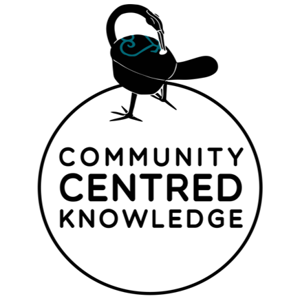

Vision
Oman Vision 2040 is the Sultanate's gateway to overcoming challenges, keeping pace with
regional and global changes, generating and seizing opportunities to foster economic
competitiveness and social well-being, stimulating growth, and building confidence
in all economic, social and developmental relations nationwide.
An integrated Transport,Communications and Information technology ecosystem that propels
economic diversification,innovation and welfare.


Mission
Provide a sophisticated Transport, Communications and Information technology
infrastructure that is secure and integrated with urban and economic development,
which aligns with the requirements of sustainability and future in achieving Oman 2040
vision.
National Programs
National e-Payment
Gateway
Innovation and
Support Center
Muscat the Arab
digital capital
Sas Center for
Mobile Applications
Sas Center for
Virtual Reality
Sas Center for
4th Industrial
Revolution
e-Tendering

Community Knowledge
Centers
National e-Payment Gateway
The National ePayment Gateway (ePG) provides an operational component of the eGovernance infrastructure and full eCommerce facilities that allow secure online payments (ePayments). The ePayment Gateway supports multiple acquiring banks and will operate as a critical shared service within the eGovernance architecture along with Oman’s forthcoming Government eServices Portal.
Innovation and Support Center
The Innovation and Support Center is managed by highly trained and qualified professional Omanis, not only to keep pace with global development in the provision of technical support services but also to lead this development. Over the past years, the center has proved its ability to lead the development in the areas of hosting, consultancy, project management services and technical support at global levels.
Muscat the Arab digital capital 2022
Muscat won the title of The Digital capital 2022
eTendering
The primary goal of eTendering is to establish a centralized state of the art procurement management system & processes. This will help in achieving higher efficiency and enhance transparency and accuracy in government procurement processes with considerable cost-savings. eTendering makes it possible for government entities to prepare, float, evaluate and award tenders online.
Community Knowledge Centers
CKCs are one of the most important initiatives to which the e.oman Strategy has accorded great attention with a view to enabling the individuals of the society to reach broader horizons in the area of information technology. The overall aim of these Centers is to help bridge the digital gap among citizens .
Sas Center for Virtual Reality
Sas Center for Virtual Reality (Sas.VR) was established in 2014 to be a regional center that provides the infrastructure needed for developing virtual reality applications and multimedia content. It also works to feed the local and regional market with People specialized in this field by providing training to Omani talented people and encouraging them to be entrepreneurs.
Sas Center for Mobile Applications Development
Sas Center for Mobile Applications Development aims to provide a quality platform and industry cluster to build and enhance the national development skills, talents and capacity required to develop ideas into commercially sustainable mobile applications and businesses.
Sas Center for 4th Industrial Revolution
Believing in the importance of emerging technologies, specifically the technologies of the 4th IR such as artificial intelligence and internet of things in moving and accelerating the growth of various economic sectors, MTCIT has established Sas Center for 4 Industrial Revolution in the year (2020).
Ministry of Transport, Communications and Information Technology
The Ministry of Transport, Communications and Information Technology is the governmental body in the Sultanate of Oman responsible for all matters relating to infrastructure, including airports and ports, transport, logistics, communications, and information technology. The Ministry was established 15th October 2019 assuming responsibilities from a defunct government body Information Technology Authority.
The Ministry is also responsible for introducing and executing E-Government strategy in the Sultanate of Oman.
Directorates and other centers within The Ministry of Transport, Communications and Information Technology:
- The Directorate General of Policies & Governance
- The Directorate General of Infrastructure and Digital Platforms
- The Directorate General of Sector stimulation and Future skills
- The Directorate General of Digital transformation and Sectors empowerment
- The National Center for Space and Advance Technology
.jpg)